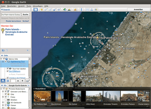

Google Earth
Dieser Artikel wurde für die folgenden Ubuntu-Versionen getestet:
Ubuntu 16.04 Xenial Xerus
Ubuntu 14.04 Trusty Tahr
Zum Verständnis dieses Artikels sind folgende Seiten hilfreich:
Mit Google Earth  (GE) kann man Bildmaterial der Erde sowie sonstige geografische Informationen am Bildschirm betrachten. Mit der Software kann man zudem Satelliten- und Luftbilder unterschiedlicher Auflösung mit Geodaten überlagern und auf einem digitalen Höhenmodell der Erde darstellen. Jeder Teil der Erde lässt sich stufenlos zoomen, und selbst schwach besiedelte Regionen liegen in hoher Auflösung vor. Google Earth ist in der Basisversion unentgeltlich nutzbar.
(GE) kann man Bildmaterial der Erde sowie sonstige geografische Informationen am Bildschirm betrachten. Mit der Software kann man zudem Satelliten- und Luftbilder unterschiedlicher Auflösung mit Geodaten überlagern und auf einem digitalen Höhenmodell der Erde darstellen. Jeder Teil der Erde lässt sich stufenlos zoomen, und selbst schwach besiedelte Regionen liegen in hoher Auflösung vor. Google Earth ist in der Basisversion unentgeltlich nutzbar.
Die Mindestanforderungen sind der Homepage zu entnehmen. 3D-Beschleunigung muss aktiviert sein [6]. Wichtiger als Prozessor und Arbeitsspeicher ist eine schnelle Internetverbindung – ab DSL 1000 sollte es problemlos laufen.
Installation¶
Google Earth ist nicht in den offiziellen Paketquellen enthalten, sondern nur als Fremdpaket erhältlich. Darüber hinaus müssen je nach Ubuntu-Version und Systemarchitektur bestimmte Abhängigkeiten zuerst manuell installiert werden, wodurch sich die Installation relativ komplex gestaltet.
Hinweis!
Fremdpakete können das System gefährden.
Anmerkung: Die 64-Bit-Version kann unter Ubuntu 14.04 nicht installiert werden, weil das von Google bereitgestellte Paket bestimmte Änderungen in den offiziellen Paketquellen nicht berücksichtigt. Benutzer dieses Systems können problemlos auf die 32-Bit-Version des Programms wie im Abschnitt 32-Bit-Version in einem 64-Bit-System beschrieben ausweichen.
Nutzer von Ubuntu 16.04 folgen dem entsprechenden Abschnitt weiter unten.
Für die 32-bit und die 64-bit-Version ist die Installation des folgenden Pakets erforderlich [1]:
lsb-core (nur Ubuntu 14.04)
 mit apturl
mit apturl
Paketliste zum Kopieren:
sudo apt-get install lsb-core
sudo aptitude install lsb-core
Die jeweils aktuelle stabile Version erhält man im Download-Bereich  der offiziellen Website. Dort lädt man je nach Systemarchitektur entweder die 32- oder die 64-bit-Version herunter. Das heruntergeladene DEB-Paket kann nun manuell installiert werden [2].
der offiziellen Website. Dort lädt man je nach Systemarchitektur entweder die 32- oder die 64-bit-Version herunter. Das heruntergeladene DEB-Paket kann nun manuell installiert werden [2].
32-Bit-Version in einem 64-Bit-System¶
Folgende Pakete sind vorab zu installieren:
lsb-core (nur Ubuntu 14.04)
libc6:i386 (32-Bit-Paket)
libfontconfig1:i386 (32-Bit-Paket)
libglib2.0-0:i386 (32-Bit-Paket)
libglu1-mesa:i386 (32-Bit-Paket)
libsm6:i386 (32-Bit-Paket)
libx11-6:i386 (32-Bit-Paket)
libxext6:i386 (32-Bit-Paket)
libxrender1:i386 (32-Bit-Paket)
mit apturl
Paketliste zum Kopieren:
sudo apt-get install lsb-core libc6:i386 libfontconfig1:i386 libglib2.0-0:i386 libglu1-mesa:i386 libsm6:i386 libx11-6:i386 libxext6:i386 libxrender1:i386
sudo aptitude install lsb-core libc6:i386 libfontconfig1:i386 libglib2.0-0:i386 libglu1-mesa:i386 libsm6:i386 libx11-6:i386 libxext6:i386 libxrender1:i386
Außerdem wird eine passende 32-Bit-Version von libgl1-mesa-glx benötigt. Benutzer von LTS-Versionen haben möglicherweise einen LTS Enablement Stack installiert und müssen daher auch die dazu passende Version von libgl1-mesa-glx wählen. Die folgenden Terminalbefehle [3] installieren die richtige Version:
pkg=$(dpkg-query -l libgl1-mesa-glx | grep -m1 ^ii[[:space:]]* | grep -o libgl1-mesa-glx[[:graph:]]* | sed -r s/:\(i386\|amd64\)/""/g) sudo apt-get install $pkg:i386
Wer keinen LTS Enablement Stack installiert hat (Ubuntu 14.04 und 14.04.1), wählt das folgende Paket:
libgl1-mesa-glx:i386 (32-Bit-Paket)
mit apturl
Paketliste zum Kopieren:
sudo apt-get install libgl1-mesa-glx:i386
sudo aptitude install libgl1-mesa-glx:i386
Das zuvor von der Website heruntergeladene DEB-Paket von Google Earth kann nun manuell installiert werden [2].
Ubuntu 16.04¶
Die notwendigen Befehle zur Installation der Abhängigkeiten und Google Earth selbst unterscheiden sich je nach Systemarchitektur:
32-Bit:
## Google Earth installieren: ## (dies wird zunächst mit einer Fehlermeldung wegen fehlender Paketabhängigkeiten enden) cd /tmp wget http://dl.google.com/dl/earth/client/current/google-earth-stable_current_i386.deb sudo dpkg -i google-earth-stable_current_i386.deb ## Abhängigkeiten installieren: sudo apt-get -f install ## Aufräumen (optional): rm google-earth-stable_current_i386.deb
64-Bit:
## Google Earth installieren: ## (dies wird zunächst mit einer Fehlermeldung wegen fehlender Paketabhängigkeiten enden) cd /tmp wget http://dl.google.com/dl/earth/client/current/google-earth-stable_current_amd64.deb sudo dpkg -i google-earth-stable_current_amd64.deb ## Abhängigkeiten installieren: sudo apt-get -f install ## Aufräumen (optional): rm google-earth-stable_current_amd64.deb
Damit ist die Grundinstallation abgeschlossen (siehe auch Google Earth on Ubuntu 16.04  ).
).
Beim Aktualisieren der Paketquellen taucht ein weiteres Problem auf: bei der Installation wird eine Fremdquelle hinzugefügt, um zukünftige Updates von Google Earth automatisch installieren zu können. Allerdings erhält man dadurch folgende Warnung:
http://dl.google.com/linux/earth/deb/dists/stable/Release.gpg: Signature by key 4CCA1EAF950CEE4AB83976DCA040830F7FAC5991 uses weak digest algorithm (SHA1) ...
Entweder findet man sich mit dieser Warnung ab oder man deaktiviert die Fremdquelle "http://dl.google.com/linux/earth/deb/ stable main" (siehe Paketquellen freischalten). In der Folge muss man GE nun bei Erscheinen einer neuen Version in zwei Schritten manuell aktualisieren:
Google Earth deinstallieren:
sudo apt-get purge google-earth-stable
Google Earth erneut installieren. Wie oben unterscheiden sich die Befehle je nach Systemarchitektur.
32-Bit:
cd /tmp wget http://dl.google.com/dl/earth/client/current/google-earth-stable_current_i386.deb sudo dpkg -i google-earth-stable_current_i386.deb ## Aufräumen: rm google-earth-stable_current_i386.deb
64-Bit:
cd /tmp wget http://dl.google.com/dl/earth/client/current/google-earth-stable_current_amd64.deb sudo dpkg -i google-earth-stable_current_amd64.deb ## Aufräumen: rm google-earth-stable_current_amd64.deb
Bedienung¶
 Nach der Installation findet sich das Programm bei Ubuntu-Varianten mit einem Anwendungsmenü unter "Internet -> Google Earth" [3]. Es lässt sich auch mit dem folgenden Befehl im Terminal [4] starten:
google-earth
Aussehen¶
Google Earth benutzt das Qt Toolkit zur Anzeige der Programmoberfläche. Dennoch fügt sich Google Earth selbst in der auf Qt basierenden Desktopumgebung KDE Plasma sehr schlecht ein. Dies liegt daran, dass es nicht die im System installierten Bibliotheken nutzt, sondern fest in das Programm eingebaute Bibliotheken verwendet. Im Fachjargon spricht man davon, dass diese Bibliotheken statisch verlinkt sind. Man kann das Aussehen jedoch anpassen. Dazu startet man Google Earth im Terminal und fügt eine Option hinzu:
google-earth -style GTK # GNOME- bzw. Xfce-Design google-earth -style plastique # KDE-Design
Ist das Ergebnis zufriedenstellend, kann man mit einem Texteditor [5] und Root-Rechten die Exec-Zeile im Programmstarter /usr/local/share/applications/google-earth.desktop entsprechend ergänzen:
Exec=google-earth -style GEWÜNSCHTER_STIL %f
Problembehebung¶
Orte werden falsch angeflogen¶
Wenn eine Suche nach einem beliebigen Ort dazu führt, dass ein ganz anderer Ort in der Mitte des Programmfensters angezeigt wird (zum Beispiel bei einer Suche nach Tokio nicht die japanische Hauptstadt, sondern Indien), muss verhindert werden, dass Google Earth einen deutschen, österreichischen oder schweizerischen Standort des Benutzers annimmt.
Es reicht, den an der Lokalisierung beteiligten Umgebungsvariablen LC_ALL oder LC_NUMERIC temporär beim Programmstart den US-amerikanischen Sprachcode zuzuweisen:
env LC_NUMERIC=en_US.UTF8 google-earth
Ist das Problem behoben, kann man mit einem Texteditor und Root-Rechten die Exec-Zeile im Programmstarter /usr/local/share/applications/google-earth.desktop entsprechend ergänzen:
1 | Exec=env LC_NUMERIC=en_US.UTF8 google-earth |
Alternativ kann man auch eine beliebige Lokalisierungsvariable mit Ausnahme von LANGUAGE mit offensichtlichem Unsinn füllen, um zu erreichen, dass Google Earth den Standort nicht bestimmen kann:
env LC_TELEPHONE=nix google-earth
Programmabsturz beim Starten¶
Beim Starten von Google Earth kann es zum Absturz kommen. Wurde das Programm über das Startmenü geöffnet, erscheint keine Fehlermeldung. Dann das Programm mittels Terminal starten, damit eine Fehlermeldung angezeigt wird.
./googleearth-bin: error while loading shared libraries: libGL.so.1: cannot open shared object file: No such file or directory
Hier fehlt die betreffende Bibliothek. Das kann z.B. daran liegen, dass diese Bibliothek, obwohl sie installiert ist, nicht gefunden wird. Bei Ubuntu 14.04 64-Bit half folgender Befehl im Programmstarter:
Exec=env LD_LIBRARY_PATH=/usr/lib/i386-linux-gnu/mesa google-earth
Google Earth has caught signal 11. We apologize for the inconvenience, but Google Earth has crashed. This is a bug in the program, and should never happen under normal circumstances. A bug report and debugging data have been written to this text file: /home/user/.googleearth/crashlogs/crashlog-xxxxxxxx.txt Please include this file if you submit a bug report to Google.Die in der Meldung genannte Textdatei beinhaltet Informationen über Programm und Fehlerursache:
Major Version 6 Minor Version 2 Build Number 0001 Build Date Feb 3 2012 Build Time 15:28:07 OS Type 3 OS Major Version 2 OS Minor Version 6 OS Build Version 32 OS Patch Version 0 Crash Signal 11 Crash Time 1329207176 Up Time 2,51323 Stacktrace from glibc: ./libgoogleearth_free.so(+0xc1583)[0xc40583] ./libgoogleearth_free.so(+0xc1703)[0xc40703] [0x422400] ./libbase.so(_ZN5earth15GfxCardInfoUnixC1Ev+0x4a)[0x1c0b61a] ./libbase.so(_ZN5earth11GfxCardInfo12GetSingletonEv+0x44)[0x1c0b664] ./libgoogleearth_free.so(_ZN5earth6client11Application3runEv+0x2e)[0xc4e05e] ./libgoogleearth_free.so(+0xc005b)[0xc3f05b] ./libgoogleearth_free.so(earthmain+0x249)[0xc401b9] ./googleearth-bin[0x804878b] /lib/tls/i686/cmov/libc.so.6(__libc_start_main+0xe6)[0x1a08bd6] ./googleearth-bin[0x80486d1]
In diesem Fall fehlt die Datei libGL.so.1. Folgende Befehle schaffen Abhilfe:
wget http://librarian.launchpad.net/7037027/libGL.so.1 -O libGL.so.1 sudo cp libGL.so.1 /opt/google/earth/free
Grafikfehler¶
Kommt es beim Starten von Google Earth zu Grafikfehlern und gibt das Programm im Terminal eine Meldung ähnlich der folgenden aus:
*********************************WARN_ONCE********************************* File r300_render.c function r300Fallback line 471 Software fallback:ctx->Line.SmoothFlag **************************************************************************
kann das Programm driconf helfen. Nach der Installation startet man driconf und klickt  unter Anwendungseinstellungen auf "Hinzufügen". Als Name der Anwendung kann man einen beliebigen Namen verwenden, bei "Name der ausführbaren Datei" muss "googleearth-bin" eingetragen werden. Dann klickt man noch auf "Einstellung hinzufügen, Leistung" und setzt "disable low-impact fallback" auf "Ja". Danach sollte Google Earth laufen.
unter Anwendungseinstellungen auf "Hinzufügen". Als Name der Anwendung kann man einen beliebigen Namen verwenden, bei "Name der ausführbaren Datei" muss "googleearth-bin" eingetragen werden. Dann klickt man noch auf "Einstellung hinzufügen, Leistung" und setzt "disable low-impact fallback" auf "Ja". Danach sollte Google Earth laufen.
Auch das Deaktivieren der Compiz-Effekte hilft auf manchen Systemen.
Langsamer Bildaufbau¶
Baut sich der Bildschirm nur äußerst langsam auf, kann das Deaktivieren von "Tools → Optionen … → 3D-Ansicht → Atmosphäre" Abhilfe schaffen.
Browser bestimmen¶
Ältere Versionen von Google Earth verwenden den in der Umgebungsvariable BROWSER bestimmten Webbrowser, wenn Links in einem externen Browser geöffnet werden sollen. Ist diese Variable leer oder nicht vorhanden, kann sie einfach temporär beim Programmstart gesetzt werden. Mögliche Werte sind zum Beispiel chromium-browser oder firefox:
env BROWSER=firefox google-earth
Man kann mit einem Texteditor und Root-Rechten die Exec-Zeile im Programmstarter entsprechend ergänzen:
Exec=env BROWSER=firefox google-earth %f
Schriftart und -größe ändern¶
Die hier beschriebenen Änderungen werden jeweils erst beim nächsten Start von Google Earth aktiv. Die Einstellungen zu Schriftart und -größe sind über die Datei ~/.config/Google/GoogleEarthPlus.conf vorzunehmen. Beispiel:
[Render] GuiFontFamily=DejaVu Sans GuiFontSize=12 GuiFontWeight=70
Schlechte Schriftdarstellung¶
Wenn die Buchstaben nicht vernünftig dargestellt werden, kann es helfen, das folgende Paket zu installieren:
ttf-mscorefonts-installer (multiverse)
mit apturl
Paketliste zum Kopieren:
sudo apt-get install ttf-mscorefonts-installer
sudo aptitude install ttf-mscorefonts-installer
Danach muss der Zwischenspeicher geleert werden, z.B. im Terminal mit:
sudo fc-cache -fv
Nach einem Neustart des Programms werden die neuen Schriften benutzt.
Flugsimulator¶
Der eingebaute Flugsimulator ist im Menü unter "Tools → Flugsimulator starten …" zu finden. Zur Auswahl steht entweder der Düsenjäger F16 oder das Propellerflugzeug Cirrus SR22. Für eine kleine Flugrunde genügen nachfolgende Tasten. Die komplette Liste der Tastenkombinationen befindet sich in der offiziellen Hilfe .
| Steuerung des Flugsimulators | |
| Tastenkombination | Funktion |
| Bild ↑ | mehr Schub |
| Bild ↓ | weniger Schub |
| ← → ↑ ↓ | Kursänderung |
| Strg + Pfeiltasten | Kamera schwenken |
Links¶
Extern¶
Google Earth – Wikipedia-Artikel
Google Earth Hacks
- Umfangreiche Webseite mit KMZ-DateienDie ganze Welt im Überblick
– Artikel LinuxUser, 08/2006
- Erstellt mit Inyoka
-
 2004 – 2017 ubuntuusers.de • Einige Rechte vorbehalten
2004 – 2017 ubuntuusers.de • Einige Rechte vorbehalten
Lizenz • Kontakt • Datenschutz • Impressum • Serverstatus -
Serverhousing gespendet von